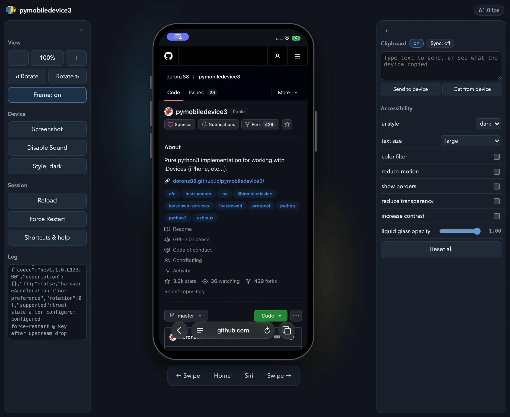

Mirroring and Controlling the Screen¶
pymobiledevice3 can show a device's screen live and let you use it from your computer: tap, swipe, type, press the hardware buttons, hear its audio and share the clipboard. There are two viewers:
serve-web: the screen in any modern browser, on macOS, Linux or Windows, with nothing else to install.serve-vnc: a VNC server for macOS Screen Sharing or any VNC client (macOS hosts only).
Both use the same live video stream Xcode's device window uses, sent by the device itself over the iOS 17+ tunnel that pymobiledevice3 sets up for you.
Requirements¶
- iOS 27 or later. Older versions don't send the stream, so both commands refuse to start.
- Developer Mode turned on and the DeveloperDiskImage mounted
(
pymobiledevice3 mounter auto-mount; see Developer Mode and DDI). - No foreground app using the camera or microphone (see below).
In the browser: serve-web¶
Open http://127.0.0.1:8080/. The device appears inside a phone frame, live:

- Touch: click to tap, drag to swipe.
- Hardware buttons are drawn on the edges of the frame; click them. The bar under the device adds Home, Siri and left/right swipes.
- Keyboard: type into the page and the text goes to the device.
- Sound plays in the browser (
--no-audiostarts muted; Enable Sound turns it back on). - View panel: zoom (
Ctrl+=/Ctrl+-/Ctrl+0) and rotate the displayed device. - Screenshot (
Ctrl+P) saves the current frame as a PNG. - Shortcuts & help (
?) lists every keyboard shortcut. - Style and the Accessibility panel switch light/dark mode, text size, color filters, reduce motion, increase contrast and similar settings, like Xcode's environment overrides. They change the device's real settings and stay changed after you close the viewer; Reset all puts the accessibility settings back to their defaults.
- Clipboard panel: turn on Sync, and text and images copied on the device land in your
computer's clipboard, while whatever you copied on the computer is on the device by the time you
paste. Pictures copied out of a rich-text app such as Notes are not shared (copy them from Photos
instead). The browser only allows clipboard access on
localhostor with--https, asks for permission once, and holds device copies made while the tab is in the background until you return.
Video is decoded in the browser itself (WebCodecs), which is why nothing needs to be installed on the viewing machine.
Sharing with other machines¶
By default the viewer only listens on this computer. To reach it from the rest of the network, bind every interface and set a password, because whoever reaches the port can both watch and control the device:
pymobiledevice3 developer core-device display serve-web --bind 0.0.0.0 --password 'CHOOSE_ONE' --https
--https is needed when viewing from another machine: browsers only allow the in-browser video
decoder on localhost or over HTTPS. The certificate is self-signed, so the browser warns once;
accept it and the viewer works normally.
With a VNC client: serve-vnc (macOS)¶
Then connect to vnc://127.0.0.1:5901, for example from Finder with ⌘K, which opens macOS Screen
Sharing. This viewer is macOS-only because it decodes the video on the host with VideoToolbox.
| In the VNC client | On the device |
|---|---|
| Click / drag | Tap / swipe |
| Right-click | Home |
Ctrl+H / Ctrl+L |
Home / Lock |
Ctrl+[ / Ctrl+] |
Volume down / up |
Ctrl+\ |
Mute |
Ctrl+S |
Siri |
Useful options:
--audioplays the device's sound through the Mac's speakers.--share-clipboardshares text (VNC has no image clipboard). It follows the VNC client's own clipboard setting; clients with the Extended Clipboard extension (TigerVNC, noVNC, ...) get full UTF-8.--bind 0.0.0.0 --password 'CHOOSE_ONE'makes it reachable from other machines, with the same warning as above.
Camera and microphone¶
iOS won't start a mirroring session while a foreground app is using the camera or microphone; Xcode has the same restriction. If Camera, Voice Memos or a similar app is in front, the command explains this in one line and exits. Quit that app and run it again. While mirroring is running, those apps can't use the sensors and record silence or black video, so stop mirroring before recording with them.
Raw stream capture¶
For analysis or archiving, the stream can be saved as it arrives:
# Capture 10 seconds of the raw RTP/HEVC packets
pymobiledevice3 developer core-device display start-video-stream /tmp/cap.rtp --duration 10
# In a source checkout: convert to an .h265 file that ffplay or VLC can play
misc/rtp_dump.py /tmp/cap.rtp /tmp/cap.h265
ffplay -framerate 60 /tmp/cap.h265
start-audio-stream does the same for the device's sound.